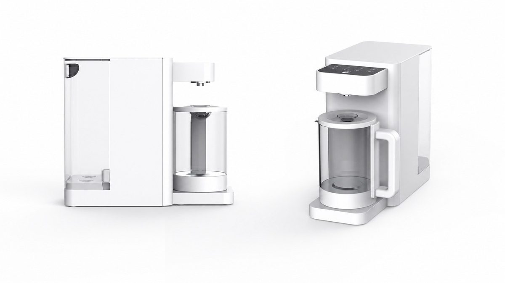
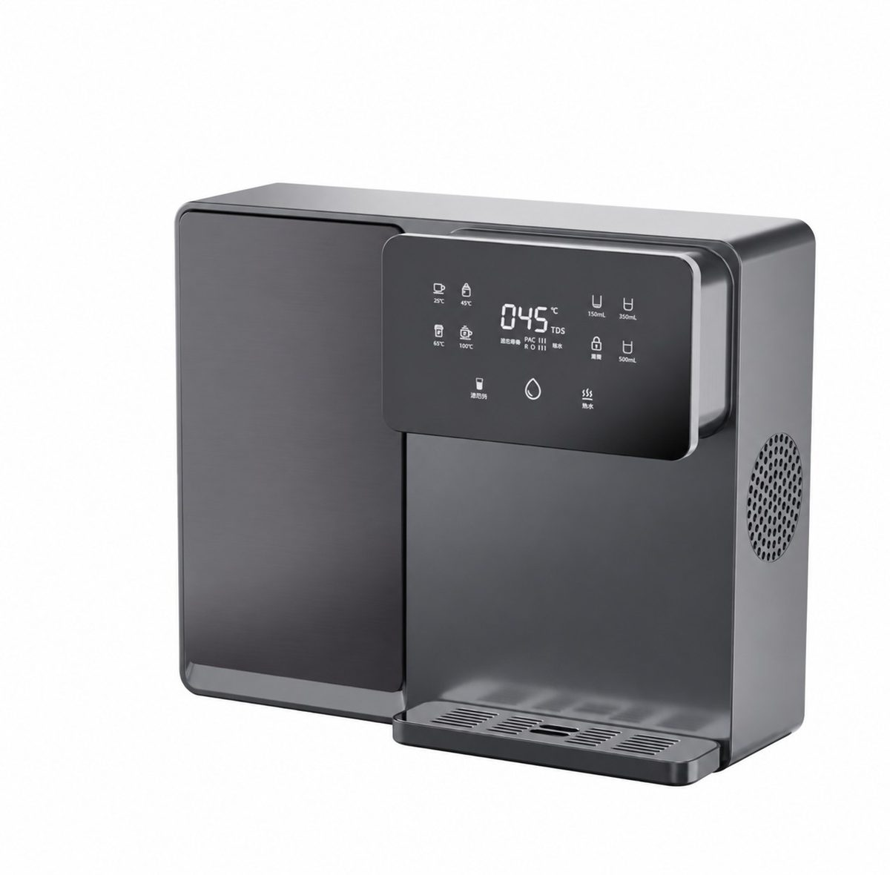
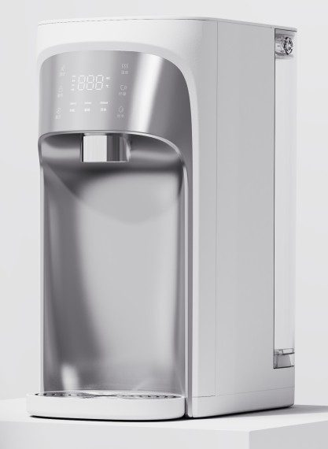

CountertopRP-C07
RO purifier with heating jug
Get a QuoteHome / Products / Countertop Systems / RP-C13

Countertop Systems
Instant-heating RO dispenser
RP-C13 — Instant-heating RO dispenser. Key specification: Technology RO purification. Specifications are confirmed per model and order.
Voltage / frequency is configurable to the target country. Other configurations are confirmed per order.
7 specification rows from the ROPureOEM catalogue.
| Technology | RO purification |
|---|---|
| Heating | Instant heating |
| Hot tank | None |
| Installation | Wall / countertop |
| Maintenance | Side-access cartridges |
| Voltage / frequency | Configurable to target country |
| Other configurations | Confirmed per order |
Specifications are taken from the ROPureOEM catalogue. Where a value is not yet confirmed, it is listed as “Confirmed per order” — we do not publish unconfirmed figures.

CountertopRO purifier with heating jug
Get a Quote
CountertopAll-in-one cartridge countertop purifier
Get a Quote Countertop
CountertopRO purifier with ice, hot and cold water
Get a Quote Countertop
CountertopCountertop RO with compressor cooling
Get a Quote